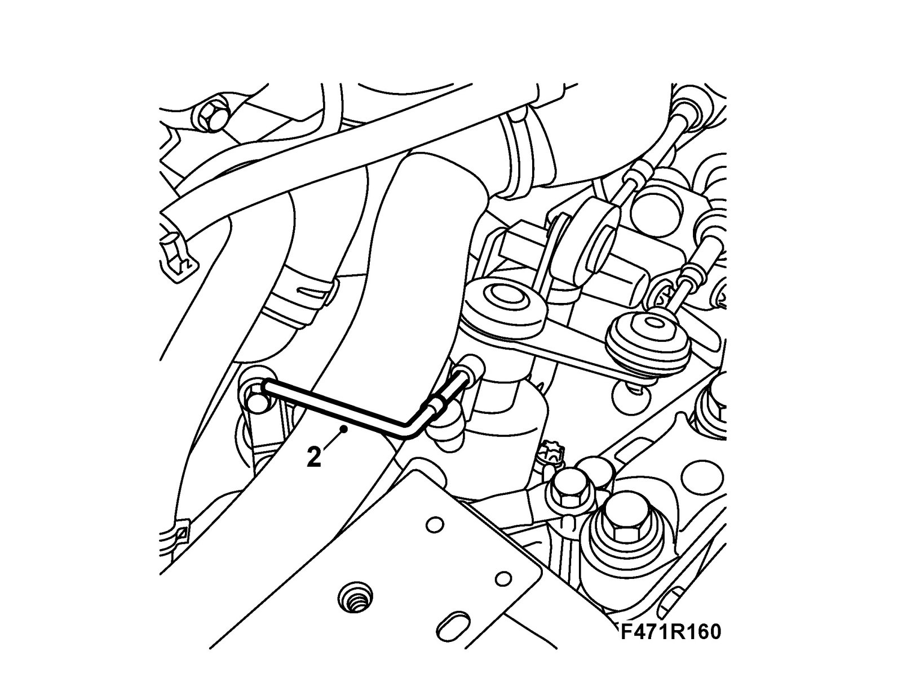
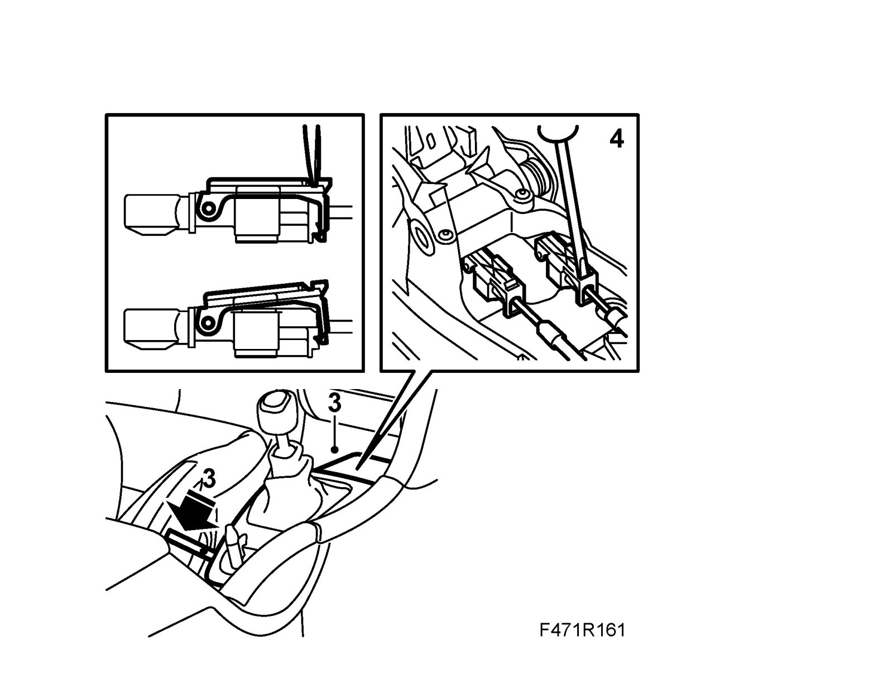
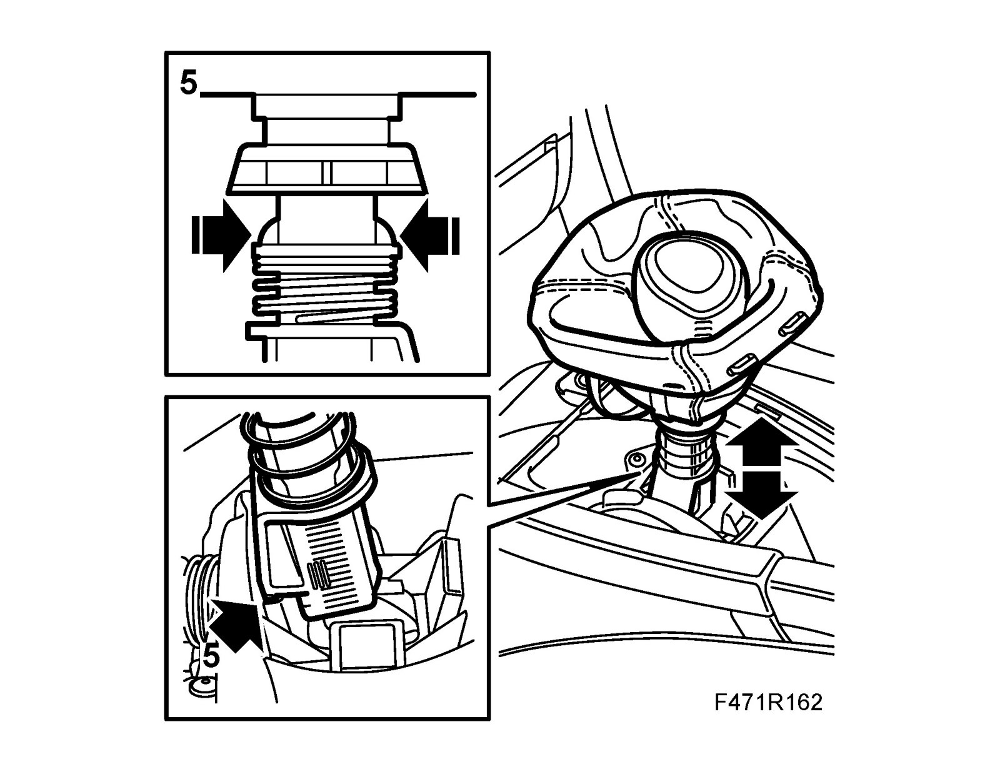
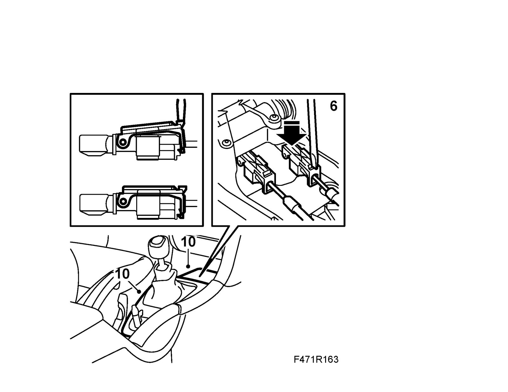

Shift Cable: Adjustments
Adjusting gear cablesAdjustment
1. Engage neutral gear.
2. Lift in the selector shaft slightly and insert 87 92 335 Lock pin into the hole in the shaft.

3. Detach the gear lever cover and rubber mat and lift up the cover. Use 82 93 474 Removal tool.

4. Carefully press a screwdriver blade onto the cable adjuster and pry slightly towards the gear lever. A click is heard which means that the adjustment catch has released. Repeat the procedure on the other cable adjuster.
Important
Counterhold the adjusting sleeve when the catches are depressed.
5. Secure the gear lever in its adjustment position by lifting the adjusting sleeve while pressing in the two catches. Use a suitable pair of pliers. Lower the adjusting sleeve carefully and allow the catch to engage the recess in the gear lever housing (adjusting position, neutral to the left).

6. Move the gear lever to the left.
Important
Use one finger only to carefully move the lever to the left.
Hold it in this position and at the same time press the screwdriver against the crescent shaped section of the adjustment catch. When a click is heard the catch has engaged the correct position. Repeat the procedure on the other cable adjuster.

7. Lift up the adjusting sleeve to its normal position and make sure the catches lock.
8. Remove the lock pin.
9. Check the shifting positions.
10. Fit the gear lever cover and rubber mat.